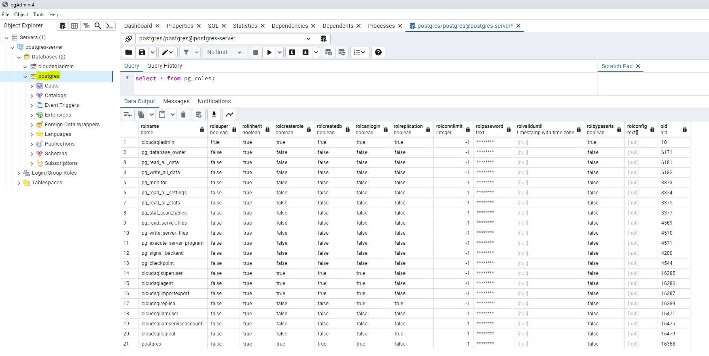
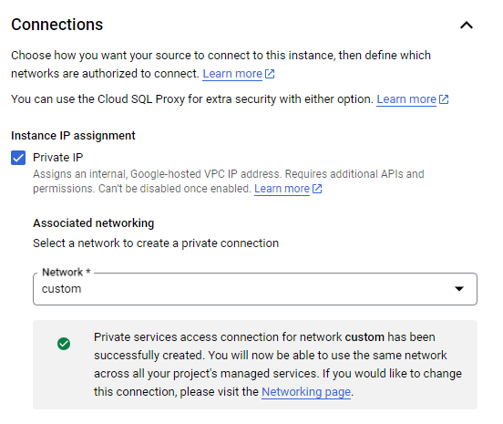
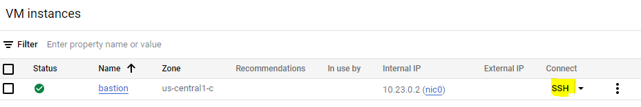
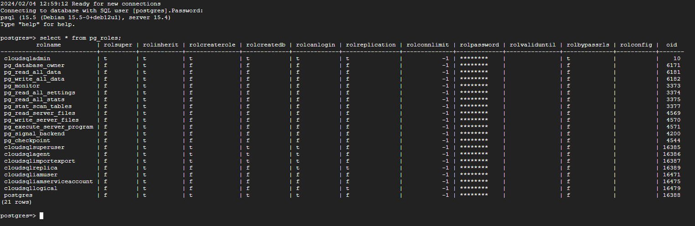
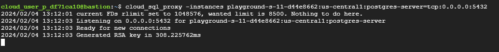
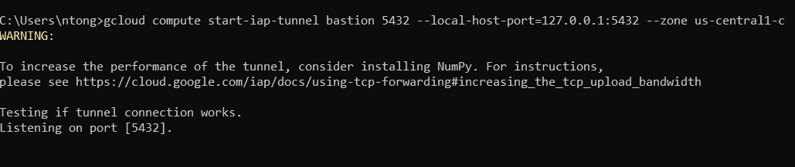
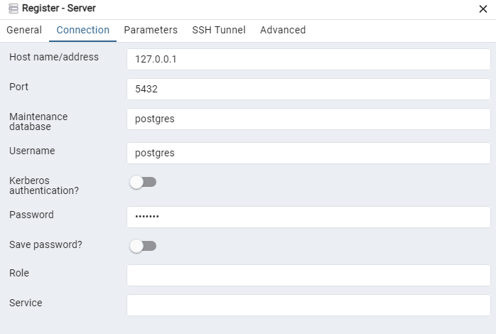

Recently, I worked on a project on which we need to access privately to CloudSQL instance (PostgreSQL instance in our case). In this article, we will explore two options to do so. However, you can use the same technique for other types of CloudSQL (SQL Server or MySQL).

Prerequisites
In order to connect privately to CloudSQL, you need to have :
- CloudSQL with private services access connection enabled 
- Enable Cloud SQL Admin API
- A private virtual machine (bastion) on the same network as your private services connection
- Required access scopes: Cloud Platform & Cloud SQL or Allow full access to all Cloud APIs
- A firewall rule allowing IAP on port 22 (SSH)
gcloud compute --project=[YOUR_PROJECT_ID] firewall-rules create allow-iap --direction=INGRESS --priority=1000 --network=[YOUR_NETWORK_NAME] --action=ALLOW --rules=tcp:22 --source-ranges=35.235.240.0/20
- A Cloud NAT gateway allowing outbound connections to the Internet without public IP on the bastion
Connect to CloudSQL through gcloud command line
With the IAP in place, we can now access to the bastion with private ip through IAP

On your bastion, you need to install Cloud SQL Proxy (v1). At the time of writing, the latest v1 version is v1.33.16.
curl -O https://storage.googleapis.com/cloudsql-proxy/v1.33.16/cloud_sql_proxy.linux.amd64
chmod +x cloud_sql_proxy.linux.amd64
sudo mv cloud_sql_proxy.linux.amd64 /usr/local/bin/cloud_sql_proxy
You must be able to go to the Internet in order to download this binary thanks to Cloud NAT. If it doesn’t work, please review your Cloud NAT configuration.
Next, you install the psql client on this bastion:
sudo apt-get update
sudo apt-get install postgresql-client
Now, you can authenticate to Google and then connect to private CloudSQL using gcloud:
gcloud auth login
gcloud config set project [YOUR_CLOUDSQL_PROJECT_ID]
gcloud beta sql connect [CLOUD_SQL_INSTANCE_NAME] --database [YOUR_DB] --user [YOUR_USER]
Congratulation! You have established successfully the private connection from your bastion to CloudSQL through Cloud SQL Proxy. 
If you installed the Cloud SQL Proxy v2 instead of v1, you’ll see this error:
ERROR: (gcloud.beta.sql.connect) Cloud SQL Proxy (v1) couldn't be found in PATH. Either install the component with `gcloud components install cloud_sql_proxy` or see https://github.com/GoogleCloudPlatform/cloud-sql-proxy/releases to install the v1 Cloud SQL Proxy. The v2 Cloud SQL Proxy is currently not supported by the connect command. You need to install the v1 Cloud SQL Proxy binary to use the connect command
Connect to CloudSQL through database management tool
If your organization policy does not block the tunnel on port 5432 from your local machine to your bastion in GCP, you can further connect to this CloudSQL through a database management tool like pgAdmin.
Update your above IAP rule “allow-iap” to allow IAP tunnel on port 5432 for Postgres.
gcloud compute --project=[YOUR_PROJECT_ID] firewall-rules update allow-iap \
--rules=tcp:22,tcp:5432 --source-ranges=35.235.240.0/20
On your bastion, start CloudSQL Proxy to create a tunnel to CloudSQL on port 5432.
cloud_sql_proxy -instances [YOUR_CLOUDSQL_CONNECTION_NAME]=tcp:0.0.0.0:5432
This tunnel listen on port 5432 on your bastion and will forward the received requests to CloudSQL. 
On your local machine, create a tunnel to your bastion on port 5432:
gcloud auth login
gcloud config set project [BASTION_PROJECT_ID]
gcloud compute start-iap-tunnel [YOUR_VM_BASTION_NAME] 5432 --local-host-port=127.0.0.1:5432 --zone [YOUR_VM_BASTION_ZONE]
This tunnel listen on port 5432 on your local machine and take care of forwarding the received requests to your vm bastion. 
Open your pgAdmin, register your postgres server as following
- Name: postgres-server
- Connection
- Host name/address: 127.0.0.1
- Port: 5432
- Username: your database’s username
- Password: your database’s password

Click Save button to register this server. You can now connect to CloudSQL instance from your local machine et run the query against your database.